library(tidyverse);library(phyloseq); library(decontam)
library(compositions); library(patchwork);
library(ggupset); library(gt)
library(plotly); library(viridis); library(vegan)Northern Gulf
1 Set up R environment
Set up R & import starting data
load("input-data/gulf-2023-sequence-analysis_02062026.RData", verbose = TRUE)Loading objects:
asv_long_avg_wtax_clean
asv_long_wtax_clean
tax_key
metadata_allsamples
metadata_seqsamples
metadata_stn_infooffshore_on_shore_order <- c("S1", "S2", "S3", "S4", "S5","S9", "S8", "S7", "S11", "S12", "S14", "S15")
stn_nisk_in_study <- as.character(unique(asv_long_avg_wtax_clean$STN_NISKIN))1.1 Change Lat/Long to surface stations
head(metadata_allsamples) # All stations are present.# A tibble: 6 × 23
Station Niskin Depth Latitude Longitude Pressure Date Time_UTC ENV_VARIABLE
<int> <int> <dbl> <dbl> <dbl> <dbl> <chr> <chr> <chr>
1 1 1 46.5 28.8 89.5 46.9 7/30/2… 18:56:28 DIC
2 1 1 46.5 28.8 89.5 46.9 7/30/2… 18:56:28 NH4
3 1 1 46.5 28.8 89.5 46.9 7/30/2… 18:56:28 NO2
4 1 1 46.5 28.8 89.5 46.9 7/30/2… 18:56:28 NO3
5 1 1 46.5 28.8 89.5 46.9 7/30/2… 18:56:28 Oxygen_CTD
6 1 1 46.5 28.8 89.5 46.9 7/30/2… 18:56:28 PO4
# ℹ 14 more variables: value <dbl>, DATE_GMT <date>, TIME_GMT <chr>,
# datetime_cst <dttm>, SUNRISE <dttm>, SUNSET <dttm>, DAY_NIGHT <chr>,
# HR_OF_DAY <int>, stn <chr>, STN_ORDER <fct>, TRANSECT <fct>,
# DIST_OUTFLOW <dbl>, DEPTH_BIN <chr>, STN_NISKIN <chr># unique(env_metadata_mod$Station)
tmp_lat_long <- metadata_allsamples %>%
filter(Depth < 5) %>%
ungroup() %>%
group_by(Station) %>%
slice_sample(n = 1) %>%
select(Station, Latitude, Longitude)
metadata_allsamples_mod <- metadata_allsamples %>%
select(-Latitude, -Longitude) %>%
left_join(tmp_lat_long)Joining with `by = join_by(Station)`1.2 Factoring
offshore_on_shore_order <- c("S1", "S2", "S3", "S4", "S5",
"S9", "S8", "S7",
"S11", "S12", "S14", "S15")
stn_order_shore_offshore <- c(1, 2, 3, 4, 5,
9, 8, 7, 6,
10, 11, 12, 13, 14, 15, 16, 17)
transect_labels <- c("transect1", "transect1", "transect1", "transect1", "transect1", "transect2", "transect2", "transect2", "transect3", "transect3", "transect3", "transect3")
watercol_features <- c("other", "DCM", "Salinity maximum", "Oxygen minimum")
watercol_features_label <- c("Depth with no feature", "DCM", "Salinity maximum", "Oxygen minimum")
watercol_shape <- c(21, 23, 24, 22)
names(watercol_shape) <- watercol_features_label2 Map
Fxn for ther surface params, lat, long
Set up a data frame with all parameters as columns.
head(metadata_allsamples_mod)# A tibble: 6 × 23
Station Niskin Depth Pressure Date Time_UTC ENV_VARIABLE value DATE_GMT
<int> <int> <dbl> <dbl> <chr> <chr> <chr> <dbl> <date>
1 1 1 46.5 46.9 7/30/2… 18:56:28 DIC 2167. 2023-07-30
2 1 1 46.5 46.9 7/30/2… 18:56:28 NH4 1.01 2023-07-30
3 1 1 46.5 46.9 7/30/2… 18:56:28 NO2 0.06 2023-07-30
4 1 1 46.5 46.9 7/30/2… 18:56:28 NO3 3.09 2023-07-30
5 1 1 46.5 46.9 7/30/2… 18:56:28 Oxygen_CTD 2.56 2023-07-30
6 1 1 46.5 46.9 7/30/2… 18:56:28 PO4 0.56 2023-07-30
# ℹ 14 more variables: TIME_GMT <chr>, datetime_cst <dttm>, SUNRISE <dttm>,
# SUNSET <dttm>, DAY_NIGHT <chr>, HR_OF_DAY <int>, stn <chr>,
# STN_ORDER <fct>, TRANSECT <fct>, DIST_OUTFLOW <dbl>, DEPTH_BIN <chr>,
# STN_NISKIN <chr>, Latitude <dbl>, Longitude <dbl>stn_labels <- metadata_seqsamples %>%
ungroup() %>%
select(Station, Latitude, Longitude, Depth) %>% distinct()
stn_labels# A tibble: 90 × 4
Station Latitude Longitude Depth
<int> <dbl> <dbl> <dbl>
1 1 28.8 89.5 18.6
2 1 28.8 89.5 2.48
3 2 28.6 89.1 353.
4 2 28.6 89.1 269.
5 2 28.6 89.1 150.
6 2 28.6 89.1 24.2
7 2 28.6 89.1 2.9
8 3 28.4 88.8 1234.
9 3 28.4 88.8 1098.
10 3 28.4 88.8 898.
# ℹ 80 more rowssurface_labels <- stn_labels %>%
filter(Depth < 5) %>%
select(Station, Latitude, Longitude) %>% distinct()2.1 Get map params
# install.packages("Rcpp")
# install.packages(c("googleway", "ggrepel",
# "ggspatial", "libwgeom", "sf", "rnaturalearth", "rnaturalearthdata"))
library(rnaturalearth)
library(rnaturalearthdata)
Attaching package: 'rnaturalearthdata'The following object is masked from 'package:rnaturalearth':
countries110library(sf)Linking to GEOS 3.13.0, GDAL 3.8.5, PROJ 9.5.1; sf_use_s2() is TRUEworld <- ne_countries(scale='medium',returnclass = 'sf')
class(world)[1] "sf" "data.frame"2.2 Map of whole Gulf region
ggulf <- ggplot(data = world) +
geom_sf(aes(fill = region_wb)) +
annotate(geom = "text", x = -90, y = 26, label = "",
fontface = "italic", color = "grey22", size = 6) +
coord_sf(xlim = c(-102.15, -74.12), ylim = c(7.65, 33.97), expand = FALSE) +
scale_fill_viridis_d(option = "plasma") +
theme(legend.position = "none", axis.title.x = element_blank(),
axis.title.y = element_blank(), panel.background = element_rect(fill = "azure"),
panel.border = element_rect(fill = NA))
ggulf
# MAP
LARGE <- ggplot(data = world) +
geom_sf(color = "black", linewidth = 0.6, fill = "grey10", alpha = 0.8) +
# Set lat long region to show:
# coord_sf(xlim = c(-90, -86.5), ylim = c(27.5, 30), expand = FALSE) + # Region of study
coord_sf(xlim = c(-110, -70), ylim = c(5, 45), expand = FALSE) + # Larger region
# Add data points for stations
# geom_point(data = surface_odv, aes(x = Longitude, y = Latitude)) +
geom_rect(xmin = -90, xmax = -86.5, ymin = 27.5, ymax = 30, fill = NA, color = "grey10", alpha = 0.9) + #inset
labs(y = "Latitude (°N)", x = "Longitude (°W)") +
scale_x_reverse() +
theme_classic() +
theme(legend.position = "none",
axis.text = element_text(size = 8, colour="black"),
axis.title = element_text(size = 8, colour="black"),
panel.background = element_rect(fill = "#B4C7D9"),
panel.border = element_rect(fill = NA))
LARGE
# MAP
# surface_labels
INSET <- ggplot(data = world) +
geom_sf(color = "black", linewidth = 0.6, fill = "grey10", alpha = 0.8) +
# Set lat long region to show
coord_sf(xlim = c(-91, -85), ylim = c(27, 31), expand = FALSE) + # Larger region
# Add data points for stations
geom_point(data = surface_labels, aes(x = Longitude, y = Latitude), size = 5, shape = 21, color = "grey20", fill = "white") +
geom_text(data = surface_labels, aes(label = Station, x = Longitude, y = Latitude), size = 3) +
geom_rect(xmin = -90, xmax = -86.5, ymin = 27.5, ymax = 30, fill = NA, color = "grey10") + #inset
labs(y = "Latitude (°N)", x = "Longitude (°W)") +
scale_x_reverse() +
theme_classic() +
theme(legend.position = "none",
axis.text = element_text(size = 12, colour="black"),
axis.title = element_text(size = 12, colour="black"),
panel.background = element_rect(fill = "#B4C7D9"),
plot.background = element_blank(),
panel.border = element_rect(fill = NA))
INSET
Map to save
# Left, bottom, right, top
INSET + inset_element(LARGE, 0.4, 0.4, 1.2, 1, align_to = "plot", clip = FALSE)
# ggsave("figures/map_overview.svg", width = 8, height = 8, device = "svg", limitsize = FALSE)Station points and labels.
stn_labels <- metadata_seqsamples %>%
select(Station, Latitude, Longitude, Depth) %>% distinct() %>%
mutate(TRANSECT = case_when(
(Station < 6) ~ 1,
(Station > 5 & Station < 10) ~ 2,
(Station >= 10) ~ 3
))
stn_labels# A tibble: 90 × 5
Station Latitude Longitude Depth TRANSECT
<int> <dbl> <dbl> <dbl> <dbl>
1 1 28.8 89.5 18.6 1
2 1 28.8 89.5 2.48 1
3 2 28.6 89.1 353. 1
4 2 28.6 89.1 269. 1
5 2 28.6 89.1 150. 1
6 2 28.6 89.1 24.2 1
7 2 28.6 89.1 2.9 1
8 3 28.4 88.8 1234. 1
9 3 28.4 88.8 1098. 1
10 3 28.4 88.8 898. 1
# ℹ 80 more rows# max_stn_num <- max(stn_labels$Station)
stn_order_shore_offshore <- c(1, 2, 3, 4, 5, 9, 8, 7, 6, 10, 11, 12, 13, 14, 15, 16, 17)
surf_labels <- stn_labels %>%
ungroup() %>%
filter(Depth < 5) %>%
select(Station, Latitude, Longitude, TRANSECT) %>%
distinct()
surf_labels# A tibble: 12 × 4
Station Latitude Longitude TRANSECT
<int> <dbl> <dbl> <dbl>
1 1 28.8 89.5 1
2 2 28.6 89.1 1
3 3 28.4 88.8 1
4 4 28.2 88.5 1
5 5 28.0 88.1 1
6 7 28.4 88.3 2
7 8 28.7 88.6 2
8 9 29.0 88.9 2
9 11 28.7 88.3 3
10 12 28.4 88.0 3
11 14 28.0 87.4 3
12 15 27.8 87.0 33 ASVs on map
set.seed(123)
library(MBA)
# ?mba.surfload("input-data/gulf-2023-sequence-analysis_02062026.RData", verbose = TRUE)Loading objects:
asv_long_avg_wtax_clean
asv_long_wtax_clean
tax_key
metadata_allsamples
metadata_seqsamples
metadata_stn_infohead(asv_long_avg_wtax_clean)# A tibble: 6 × 15
FeatureID Taxon DIVISION SUPERGROUP_CLASS Supergroup_simplified Supergroup
<chr> <chr> <chr> <chr> <chr> <chr>
1 000964551660… Euka… Radiola… Radiolaria-Acan… TSAR-Radiolaria TSAR
2 000964551660… Euka… Radiola… Radiolaria-Acan… TSAR-Radiolaria TSAR
3 000964551660… Euka… Radiola… Radiolaria-Acan… TSAR-Radiolaria TSAR
4 000964551660… Euka… Radiola… Radiolaria-Acan… TSAR-Radiolaria TSAR
5 000964551660… Euka… Radiola… Radiolaria-Acan… TSAR-Radiolaria TSAR
6 000964551660… Euka… Radiola… Radiolaria-Acan… TSAR-Radiolaria TSAR
# ℹ 9 more variables: Division <chr>, Subdivision <chr>, Class <chr>,
# Order <chr>, Family <chr>, Genus <chr>, Species <chr>, STN_NISKIN <chr>,
# MEAN_REPS_seq <dbl>3.1 Surface ASV profiles
Surface lat/long
surface_asv_odv <- asv_long_avg_wtax_clean %>% ungroup() %>%
left_join(metadata_seqsamples) %>%
# Isolate surface & average across replicates
filter(Depth < 5) %>%
select(FeatureID, Station, Latitude, Longitude, TRANSECT, Depth) %>% distinct() %>%
ungroup() %>%
group_by(Station, Latitude, Longitude, TRANSECT) %>%
summarise(ASV_COUNT = n())Joining with `by = join_by(STN_NISKIN)`Warning in left_join(., metadata_seqsamples): Detected an unexpected many-to-many relationship between `x` and `y`.
ℹ Row 1 of `x` matches multiple rows in `y`.
ℹ Row 632 of `y` matches multiple rows in `x`.
ℹ If a many-to-many relationship is expected, set `relationship =
"many-to-many"` to silence this warning.`summarise()` has regrouped the output.
ℹ Summaries were computed grouped by Station, Latitude, Longitude, and
TRANSECT.
ℹ Output is grouped by Station, Latitude, and Longitude.
ℹ Use `summarise(.groups = "drop_last")` to silence this message.
ℹ Use `summarise(.by = c(Station, Latitude, Longitude, TRANSECT))` for
per-operation grouping (`?dplyr::dplyr_by`) instead.Interpolate function for ASVs:
# Put PARAM in quotes
interpolate_lat_long_asv <- function(df, PARAM, min, max, TITLE){
# Interpolate
output_mba <- mba.surf(df[c("Longitude", "Latitude", PARAM)],
no.X = 150, no.Y = 150, extend = F)
# Extract interpolated values
dimnames(output_mba$xyz.est$z) <- list(output_mba$xyz.est$x, output_mba$xyz.est$y)
#
envs_interpol <- reshape2::melt(output_mba$xyz.est$z,
varnames = c("Longitude", "Latitude"),
value.name = PARAM) %>%
select(Longitude, Latitude, VALUE = !!PARAM) %>%
mutate(VALUE = round(VALUE, 1))
head(envs_interpol)
# MAP
ggplot(data = (world %>% filter(subunit == "United States"))) +
geom_sf(color = "black", linewidth = 0.6, fill = "grey10", alpha = 0.6) +
# Set lat long region to show:
coord_sf(xlim = c(-90, -86.75), ylim = c(27.5, 29.5), expand = FALSE) +
# Overlay with temperature
geom_raster(data = envs_interpol, aes(fill = VALUE, x = Longitude, y = Latitude)) +
geom_contour(data = envs_interpol, aes(z = VALUE, x = Longitude, y = Latitude), binwidth = 2, colour = NA, alpha = 0.2) +
geom_contour(data = envs_interpol, aes(z = VALUE,x = Longitude, y = Latitude), breaks = 20, colour = NA) +
# Add data points for stations
ggrepel::geom_text_repel(data = surf_labels,
aes(x = Longitude, y = Latitude, label = Station),
direction = "y", nudge_x = 0.1, nudge_y = 0) +
geom_point(data = surf_labels, aes(x = Longitude, y = Latitude)) +
scale_fill_fermenter(type = "seq", palette = "Reds",
direction = 1, na.value = NA,
limits = c(min, max)) +
# scale_fill_gradientn(colours = rev(ODV_colours), na.value=NA) +
labs(y = "Latitude (°N)", x = "Longitude (°W)", fill = TITLE) +
scale_x_reverse(n.breaks = 4) +
theme_classic() +
theme(axis.text = element_text(size = 12, face = "bold", colour="black"),
panel.background = element_rect(fill = "#B4C7D9"),
panel.border = element_rect(fill = NA),
aspect.ratio = 1,
legend.text = element_text(size = 10, colour="black", face = "bold"),
legend.background = element_blank(),
legend.title = element_text(size = 10, colour="black", face = "bold", hjust = 1, vjust = 1),
legend.ticks = element_line(color = "black"),
legend.position=c(0.80,.75))
}3.1.1 Total ASVs
surf_all_asv <- interpolate_lat_long_asv(surface_asv_odv, "ASV_COUNT", 300, 2000, "Total ASVs")
surf_all_asv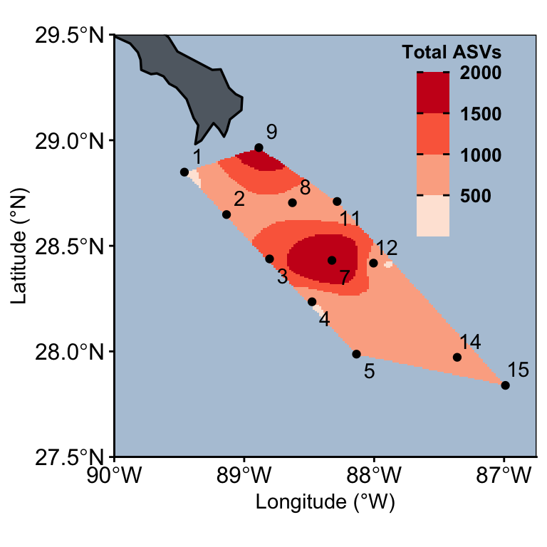
3.1.2 Taxa by ASVs
bytaxa_surface_asvs <- asv_long_avg_wtax_clean %>%
left_join(metadata_seqsamples) %>%
# Isolate surface & average across replicates
filter(Depth < 5) %>%
select(SUPERGROUP_CLASS, FeatureID, Station, Latitude, Longitude, TRANSECT, Depth) %>% distinct() %>%
ungroup() %>%
group_by(SUPERGROUP_CLASS, Station, Latitude, Longitude, TRANSECT) %>%
summarise(ASV_COUNT = n())Joining with `by = join_by(STN_NISKIN)`Warning in left_join(., metadata_seqsamples): Detected an unexpected many-to-many relationship between `x` and `y`.
ℹ Row 1 of `x` matches multiple rows in `y`.
ℹ Row 632 of `y` matches multiple rows in `x`.
ℹ If a many-to-many relationship is expected, set `relationship =
"many-to-many"` to silence this warning.`summarise()` has regrouped the output.
ℹ Summaries were computed grouped by SUPERGROUP_CLASS, Station, Latitude,
Longitude, and TRANSECT.
ℹ Output is grouped by SUPERGROUP_CLASS, Station, Latitude, and Longitude.
ℹ Use `summarise(.groups = "drop_last")` to silence this message.
ℹ Use `summarise(.by = c(SUPERGROUP_CLASS, Station, Latitude, Longitude,
TRANSECT))` for per-operation grouping (`?dplyr::dplyr_by`) instead.# unique(asv_long_avg_wtax_clean$Supergroup_simplified)
select_four <- c("TSAR-Dinoflagellata", "TSAR-Radiolaria","TSAR-Gyrista", "TSAR-Ciliophora")
bytaxa_surface_asvs_FOUR <- asv_long_avg_wtax_clean %>%
left_join(metadata_seqsamples) %>%
# Isolate surface & average across replicates
filter(Depth < 5) %>%
filter(Supergroup_simplified %in% select_four) %>%
select(Supergroup_simplified, FeatureID, Station, Latitude, Longitude, TRANSECT, Depth) %>% distinct() %>%
ungroup() %>%
group_by(Supergroup_simplified, Station, Latitude, Longitude, TRANSECT) %>%
summarise(ASV_COUNT = n())Joining with `by = join_by(STN_NISKIN)`Warning in left_join(., metadata_seqsamples): Detected an unexpected many-to-many relationship between `x` and `y`.
ℹ Row 1 of `x` matches multiple rows in `y`.
ℹ Row 632 of `y` matches multiple rows in `x`.
ℹ If a many-to-many relationship is expected, set `relationship =
"many-to-many"` to silence this warning.`summarise()` has regrouped the output.
ℹ Summaries were computed grouped by Supergroup_simplified, Station, Latitude,
Longitude, and TRANSECT.
ℹ Output is grouped by Supergroup_simplified, Station, Latitude, and Longitude.
ℹ Use `summarise(.groups = "drop_last")` to silence this message.
ℹ Use `summarise(.by = c(Supergroup_simplified, Station, Latitude, Longitude,
TRANSECT))` for per-operation grouping (`?dplyr::dplyr_by`) instead.# Dinoflagellata-Syndiniales
syndiniales_asvs <- interpolate_lat_long_asv((bytaxa_surface_asvs %>%
filter(SUPERGROUP_CLASS == "Dinoflagellata-Syndiniales")), "ASV_COUNT", 100, 1000, "Syndiniales ASVs")# unique(bytaxa_surface_asvs$SUPERGROUP_CLASS)
# Dinoflagellata-Syndiniales
Bacillario <- interpolate_lat_long_asv((bytaxa_surface_asvs %>%
filter(SUPERGROUP_CLASS == "Gyrista-Bacillariophyceae")), "ASV_COUNT", 5, 20,"Diatom ASVs")
Chrysophy<-interpolate_lat_long_asv((bytaxa_surface_asvs %>%
filter(SUPERGROUP_CLASS == "Gyrista-Chrysophyceae")), "ASV_COUNT", 4, 16,"Chrysophyte ASVs")
interpolate_lat_long_asv((bytaxa_surface_asvs %>%
filter(SUPERGROUP_CLASS == "Gyrista-Pelagophyceae")), "ASV_COUNT", 2, 10,"Pelagophyceae ASVs")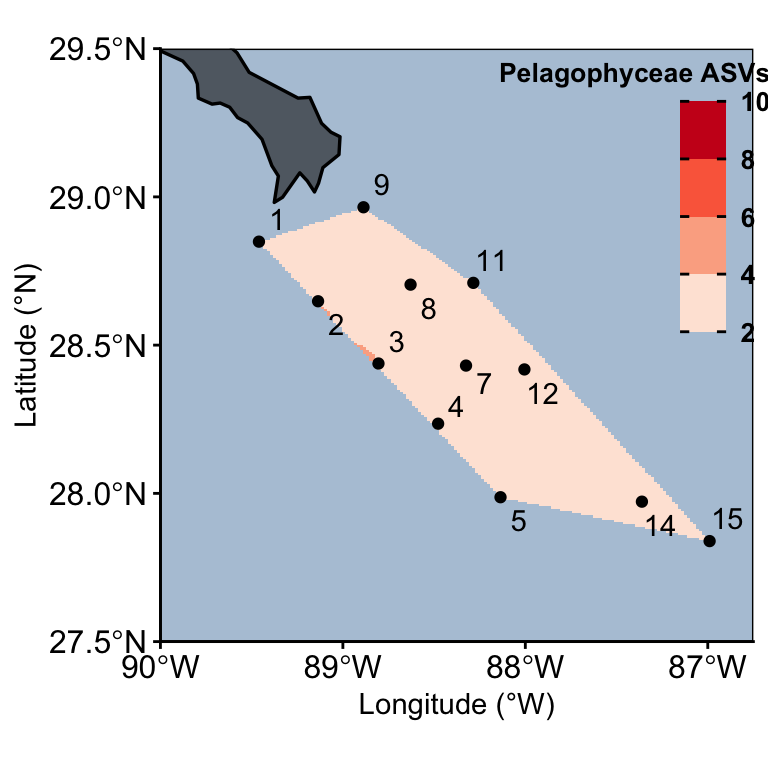
“Radiolaria-Polycystinea”
“Radiolaria-RAD”
“Radiolaria-Radiolaria”
interpolate_lat_long_asv((bytaxa_surface_asvs %>%
filter(SUPERGROUP_CLASS == "Radiolaria-Acantharea")), "ASV_COUNT", 0, 100, "Acantharea ASVs")
interpolate_lat_long_asv((bytaxa_surface_asvs %>%
filter(SUPERGROUP_CLASS == "Radiolaria-Polycystinea")), "ASV_COUNT", 0, 300, "Polycystinea ASVs")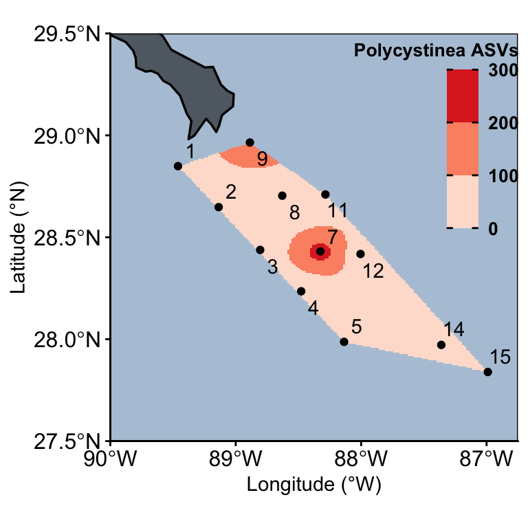
# interpolate_lat_long_asv((bytaxa_surface_asvs %>%
# filter(SUPERGROUP_CLASS == "Radiolaria-RAD")), "ASV_COUNT", 0, 10, "RAD ASVs")
# interpolate_lat_long_asv((bytaxa_surface_asvs %>%
# filter(SUPERGROUP_CLASS == "Radiolaria-Radiolaria")), "ASV_COUNT", "Radiolaria ASVs")3.1.3 Four main taxa- surface
# select_four <- c("TSAR-Dinoflagellata", "TSAR-Radiolaria","TSAR-Gyrista", "TSAR-Ciliophora")
head(bytaxa_surface_asvs_FOUR)# A tibble: 6 × 6
# Groups: Supergroup_simplified, Station, Latitude, Longitude [6]
Supergroup_simplified Station Latitude Longitude TRANSECT ASV_COUNT
<chr> <int> <dbl> <dbl> <fct> <int>
1 TSAR-Ciliophora 1 28.8 89.5 transect1 27
2 TSAR-Ciliophora 2 28.6 89.1 transect1 71
3 TSAR-Ciliophora 3 28.4 88.8 transect1 70
4 TSAR-Ciliophora 4 28.2 88.5 transect1 59
5 TSAR-Ciliophora 5 28.0 88.1 transect1 66
6 TSAR-Ciliophora 7 28.4 88.3 transect2 113# | warning: false
interpolate_lat_long_asv((bytaxa_surface_asvs_FOUR %>%
filter(Supergroup_simplified == "TSAR-Dinoflagellata")), "ASV_COUNT", 0, 500, "Dinoflagellata") + interpolate_lat_long_asv((bytaxa_surface_asvs_FOUR %>%
filter(Supergroup_simplified == "TSAR-Radiolaria")), "ASV_COUNT", 0, 500, "Radiolaria") + interpolate_lat_long_asv((bytaxa_surface_asvs_FOUR %>%
filter(Supergroup_simplified == "TSAR-Gyrista")), "ASV_COUNT", 0, 100, "Gyrista") + interpolate_lat_long_asv((bytaxa_surface_asvs_FOUR %>%
filter(Supergroup_simplified == "TSAR-Ciliophora")), "ASV_COUNT", 0, 100, "Ciliates") +
plot_layout(nrow = 1, ncol = 4)Warning: Removed 15111 rows containing non-finite outside the scale range
(`stat_contour()`).
Removed 15111 rows containing non-finite outside the scale range
(`stat_contour()`).Warning: `stat_contour()`: Zero contours were generatedWarning in min(x): no non-missing arguments to min; returning InfWarning in max(x): no non-missing arguments to max; returning -InfWarning: Removed 15111 rows containing missing values or values outside the scale range
(`geom_raster()`).Warning: Removed 92664 rows containing missing values or values outside the scale range
(`geom_contour()`).Warning: Removed 15111 rows containing non-finite outside the scale range
(`stat_contour()`).
Removed 15111 rows containing non-finite outside the scale range
(`stat_contour()`).Warning: Removed 15111 rows containing missing values or values outside the scale range
(`geom_raster()`).Warning: Removed 32358 rows containing missing values or values outside the scale range
(`geom_contour()`).Warning: Removed 288 rows containing missing values or values outside the scale range
(`geom_contour()`).Warning: Removed 15111 rows containing non-finite outside the scale range
(`stat_contour()`).
Removed 15111 rows containing non-finite outside the scale range
(`stat_contour()`).Warning: `stat_contour()`: Zero contours were generatedWarning in min(x): no non-missing arguments to min; returning InfWarning in max(x): no non-missing arguments to max; returning -InfWarning: Removed 15111 rows containing missing values or values outside the scale range
(`geom_raster()`).Warning: Removed 4420 rows containing missing values or values outside the scale range
(`geom_contour()`).Warning: Removed 15111 rows containing non-finite outside the scale range
(`stat_contour()`).
Removed 15111 rows containing non-finite outside the scale range
(`stat_contour()`).Warning: `stat_contour()`: Zero contours were generatedWarning in min(x): no non-missing arguments to min; returning InfWarning in max(x): no non-missing arguments to max; returning -InfWarning: Removed 15111 rows containing missing values or values outside the scale range
(`geom_raster()`).Warning: Removed 5631 rows containing missing values or values outside the scale range
(`geom_contour()`).# ggsave("figures/surface-main-four.svg", width = 14, height = 10, device = "svg", limitsize = FALSE)3.2 Depth ASV profiles
# head(asv_long_avg_wtax_clean)depth_asv_odv <- asv_long_avg_wtax_clean %>%
left_join((metadata_seqsamples %>% select(STN_NISKIN, Station, Latitude, Longitude, Depth, TRANSECT) %>% distinct())) %>%
filter(!is.na(Latitude)) %>%
ungroup() %>%
group_by(Station, Latitude, Longitude, Depth, TRANSECT) %>%
summarise(ASV_COUNT = n())Joining with `by = join_by(STN_NISKIN)`
`summarise()` has regrouped the output.head(depth_asv_odv)# A tibble: 6 × 6
# Groups: Station, Latitude, Longitude, Depth [6]
Station Latitude Longitude Depth TRANSECT ASV_COUNT
<int> <dbl> <dbl> <dbl> <fct> <int>
1 1 28.8 89.5 2.48 transect1 356
2 1 28.8 89.5 18.6 transect1 1243
3 2 28.6 89.1 2.9 transect1 736
4 2 28.6 89.1 24.2 transect1 1661
5 2 28.6 89.1 150. transect1 1919
6 2 28.6 89.1 269. transect1 1680# unique(depth_asv_odv$TRANSECT)# Put PARAM in quotes
interpolate_depth_long_asv <- function(df_all, transect, PARAM, min, max, TITLE){
# Isolate transect of interest
df <- df_all %>%
filter(TRANSECT == transect)
#
# Get specific transect Longitude
max_long <- round(max(df$Longitude), 0) + 1
min_long <- round(min(df$Longitude), 0) - 1
#
# Interpolate
output_mba <- mba.surf(df[c("Longitude", "Depth", PARAM)],
no.X = 150, no.Y = 150, extend = F)
# Extract interpolated values
dimnames(output_mba$xyz.est$z) <- list(output_mba$xyz.est$x, output_mba$xyz.est$y)
#
envs_interpol <- reshape2::melt(output_mba$xyz.est$z,
varnames = c("Longitude", "Depth"),
value.name = PARAM) %>%
select(Longitude, Depth, VALUE = !!PARAM) %>%
mutate(VALUE = round(VALUE, 1)) %>%
filter(Longitude > min_long & Longitude < max_long)
#
# Plot
envs_interpol %>%
ggplot(aes(x = Longitude, y = Depth)) +
geom_raster(aes(fill = VALUE)) +
geom_contour(aes(z = VALUE), binwidth = 2, colour = NA, alpha = 0.2) +
geom_contour(aes(z = VALUE), breaks = 20, colour = NA) +
# Add data points
geom_point(data = df, aes(x = Longitude, y = Depth)) +
geom_text(data = df,
aes(x = Longitude, y = -60, label = df$Station),
position = position_dodge(width = 0.1),
hjust = 0.5, vjust = 0, color= "black") +
scale_fill_fermenter(type = "seq", palette = "Reds",
direction = 1, na.value = NA,
limits = c(min, max)) +
labs(y = "Depth (m)", x = "Longitude (°W)", fill = TITLE) +
scale_x_reverse(n.breaks = 4, expand = c(0,0)) + scale_y_reverse(position = "right") +
theme_classic() +
theme(axis.text = element_text(size = 10, face = "bold", colour="black"),
panel.border = element_blank(),
aspect.ratio = 1,
legend.background = element_blank(),
legend.text = element_text(size = 14, colour="black", face = "bold"),
legend.title = element_text(size = 14, colour="black", face = "bold", hjust = 0, vjust = 1),
axis.line = element_line(),
legend.ticks = element_line(color = "black"),
legend.position=c(0.16,0.31))
}
interpolate_depth_long_asv(depth_asv_odv, "transect1","ASV_COUNT", 400, 2000,"Total ASVs")Warning: Removed 11110 rows containing non-finite outside the scale range
(`stat_contour()`).
Removed 11110 rows containing non-finite outside the scale range
(`stat_contour()`).Warning: `stat_contour()`: Zero contours were generatedWarning in min(x): no non-missing arguments to min; returning InfWarning in max(x): no non-missing arguments to max; returning -InfWarning: Removed 11110 rows containing missing values or values outside the scale range
(`geom_raster()`).Warning: Removed 154153 rows containing missing values or values outside the scale range
(`geom_contour()`).
3.2.1 Total ASVs panel
(interpolate_lat_long_asv(surface_asv_odv, "ASV_COUNT", 400, 2000, "Total ASVs") + theme(legend.position = "none")) +
interpolate_depth_long_asv(depth_asv_odv, "transect1","ASV_COUNT", 400, 2000,"Total ASVs") +
(interpolate_depth_long_asv(depth_asv_odv, "transect2","ASV_COUNT", 400, 2000, "Total ASVs") + theme(legend.position = "none")) +
(interpolate_depth_long_asv(depth_asv_odv, "transect3","ASV_COUNT", 400, 2000, "Total ASVs") + theme(legend.position = "none")) +
plot_layout(nrow = 1) + plot_annotation(tag_levels = c("a"))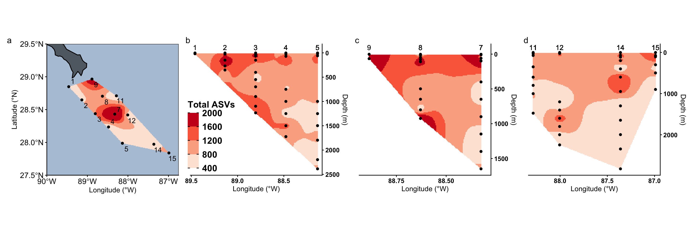
# ggsave("figures/asv-map-all.svg", width = 15, height = 5, device = "svg", limitsize = FALSE)stns_in_study <- as.character(unique(metadata_seqsamples$Station))
shallow_stn <- (surf_labels %>% filter(Station %in% stns_in_study))
interpolate_depth_long_asv((depth_asv_odv %>% filter(Depth <= 200)), "transect1","ASV_COUNT", 400, 2000,"Total ASVs") +
geom_text(data = (shallow_stn %>% filter(TRANSECT == 1)),
aes(x = Longitude, y = 0, label = (shallow_stn %>% filter(TRANSECT == 1))$Station),
position = position_dodge(width = 0.1),
hjust = 0.5, vjust = 0, color= "black") +
scale_y_reverse(position = "right", limits = c(0,200))Scale for y is already present.
Adding another scale for y, which will replace the existing scale.Warning: Removed 6180 rows containing non-finite outside the scale range
(`stat_contour()`).
Removed 6180 rows containing non-finite outside the scale range
(`stat_contour()`).Warning: `stat_contour()`: Zero contours were generatedWarning in min(x): no non-missing arguments to min; returning InfWarning in max(x): no non-missing arguments to max; returning -InfWarning: Removed 6180 rows containing missing values or values outside the scale range
(`geom_raster()`).Warning: Removed 135135 rows containing missing values or values outside the scale range
(`geom_contour()`).Warning: Removed 15 rows containing missing values or values outside the scale range
(`geom_text()`).
(interpolate_depth_long_asv((depth_asv_odv %>% filter(Depth <= 200)), "transect1","ASV_COUNT", 400, 2000,"Total ASVs") + geom_text(data = (shallow_stn %>% filter(TRANSECT == 1)),
aes(x = Longitude, y = -3, label = (shallow_stn %>% filter(TRANSECT == 1))$Station),
position = position_dodge(width = 0.1),
hjust = 0.5, vjust = 0, color= "black") +
scale_y_reverse(position = "right", limits = c(-3,200)))+
(interpolate_depth_long_asv((depth_asv_odv %>% filter(Depth <= 200)), "transect2","ASV_COUNT", 400, 2000, "Total ASVs") + geom_text(data = (shallow_stn %>% filter(TRANSECT == 2)),
aes(x = Longitude, y = -3, label = (shallow_stn %>% filter(TRANSECT == 2))$Station),
position = position_dodge(width = 0.1),
hjust = 0.5, vjust = 0, color= "black") +
scale_y_reverse(position = "right", limits = c(-3,200))) +
(interpolate_depth_long_asv((depth_asv_odv %>% filter(Depth <= 200)), "transect3","ASV_COUNT", 400, 2000, "Total ASVs") + geom_text(data = (shallow_stn %>% filter(TRANSECT == 3)),
aes(x = Longitude, y = -3, label = (shallow_stn %>% filter(TRANSECT == 3))$Station),
position = position_dodge(width = 0.1),
hjust = 0.5, vjust = 0, color= "black") +
scale_y_reverse(position = "right", limits = c(-3,200))) +
plot_layout(nrow = 1, guides = "collect") + plot_annotation(tag_levels = c("a"))Scale for y is already present.
Adding another scale for y, which will replace the existing scale.
Scale for y is already present.
Adding another scale for y, which will replace the existing scale.
Scale for y is already present.
Adding another scale for y, which will replace the existing scale.
# ggsave("figures/asv-map-all.svg", width = 15, height = 5, device = "svg", limitsize = FALSE)(interpolate_lat_long_asv(surface_asv_odv, "ASV_COUNT", 400, 2000, "Total ASVs") + theme(legend.position = "none")) |
((interpolate_depth_long_asv(depth_asv_odv, "transect1","ASV_COUNT", 400, 2000,"Total ASVs") +
(interpolate_depth_long_asv(depth_asv_odv, "transect2","ASV_COUNT", 400, 2000, "Total ASVs") + theme(legend.position = "none")) +
(interpolate_depth_long_asv(depth_asv_odv, "transect3","ASV_COUNT", 400, 2000, "Total ASVs") + theme(legend.position = "none"))) /
((interpolate_depth_long_asv((depth_asv_odv %>% filter(Depth <= 200)), "transect1","ASV_COUNT", 400, 2000,"Total ASVs") + geom_text(data = (shallow_stn %>% filter(TRANSECT == 1)),
aes(x = Longitude, y = -3, label = (shallow_stn %>% filter(TRANSECT == 1))$Station),
position = position_dodge(width = 0.1),
hjust = 0.5, vjust = 0, color= "black") +
scale_y_reverse(position = "right", limits = c(-3,200))) +
(interpolate_depth_long_asv((depth_asv_odv %>% filter(Depth <= 200)), "transect2","ASV_COUNT", 400, 2000, "Total ASVs") + geom_text(data = (shallow_stn %>% filter(TRANSECT == 2)),
aes(x = Longitude, y = -3, label = (shallow_stn %>% filter(TRANSECT == 2))$Station),
position = position_dodge(width = 0.1),
hjust = 0.5, vjust = 0, color= "black") +
scale_y_reverse(position = "right", limits = c(-3,200))) +
(interpolate_depth_long_asv((depth_asv_odv %>% filter(Depth <= 200)), "transect3","ASV_COUNT", 400, 2000, "Total ASVs") + geom_text(data = (shallow_stn %>% filter(TRANSECT == 3)),
aes(x = Longitude, y = -3, label = (shallow_stn %>% filter(TRANSECT == 3))$Station),
position = position_dodge(width = 0.1),
hjust = 0.5, vjust = 0, color= "black") +
scale_y_reverse(position = "right", limits = c(-3,200))))) +
plot_layout(guides = "collect", axis_titles = "collect") + plot_annotation(tag_levels = c("a"))Scale for y is already present.
Adding another scale for y, which will replace the existing scale.
Scale for y is already present.
Adding another scale for y, which will replace the existing scale.
Scale for y is already present.
Adding another scale for y, which will replace the existing scale.
# ggsave("figures/asv-map-all.svg", width = 15, height = 5, device = "svg", limitsize = FALSE)3.2.2 Taxa by ASVs
bytaxa_depth_asvs <- asv_long_avg_wtax_clean %>%
left_join((metadata_seqsamples %>% select(STN_NISKIN, Station, Latitude, Longitude, Depth, TRANSECT) %>% distinct())) %>%
ungroup() %>%
group_by(SUPERGROUP_CLASS, Station, Latitude, Longitude, Depth, TRANSECT) %>%
summarise(ASV_COUNT = n())Joining with `by = join_by(STN_NISKIN)`
`summarise()` has regrouped the output.# Dinoflagellata-Syndiniales
interpolate_depth_long_asv((bytaxa_depth_asvs %>%
filter(SUPERGROUP_CLASS == "Dinoflagellata-Syndiniales")),
"transect1", "ASV_COUNT",
100, 1500, "Syndiniales ASVs")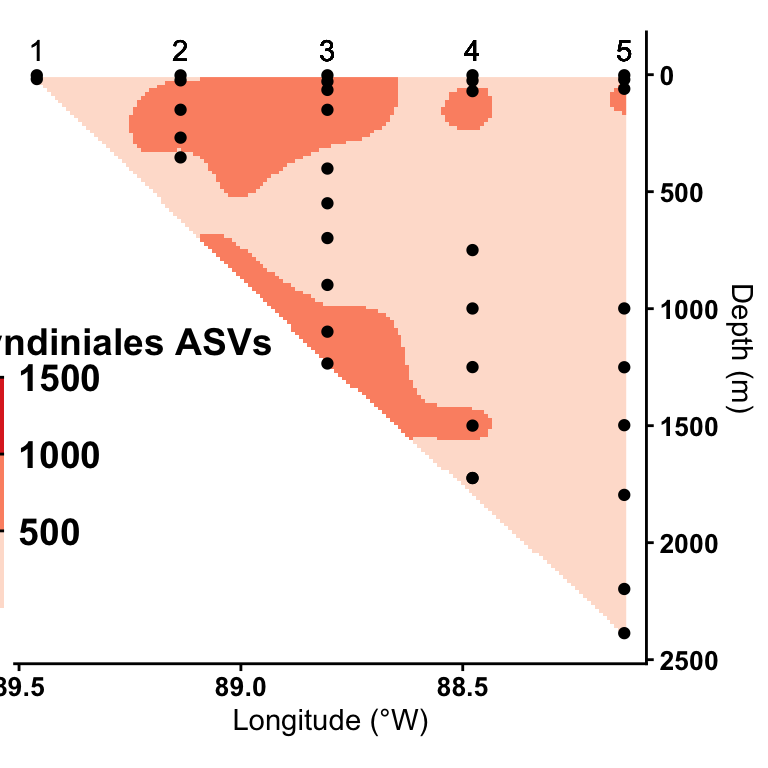
3.3 ASV profiles by taxa
# df_surf <- (bytaxa_surface_asvs %>%
# filter(SUPERGROUP_CLASS == "Dinoflagellata-Syndiniales"))
#
# df <- (bytaxa_depth_asvs %>%
# filter(SUPERGROUP_CLASS == "Dinoflagellata-Syndiniales"))tax_whole_asv_profile <- function(SUBSET, MIN, MAX, TITLE){
interpolate_lat_long_asv((bytaxa_surface_asvs %>%
filter(SUPERGROUP_CLASS == SUBSET)), "ASV_COUNT", MIN, MAX, TITLE) +
interpolate_depth_long_asv((bytaxa_depth_asvs %>%
filter(SUPERGROUP_CLASS == SUBSET)), "transect1","ASV_COUNT", MIN, MAX, TITLE) +
interpolate_depth_long_asv((bytaxa_depth_asvs %>%
filter(SUPERGROUP_CLASS == SUBSET)), "transect2","ASV_COUNT", MIN, MAX, TITLE) +
interpolate_depth_long_asv((bytaxa_depth_asvs %>%
filter(SUPERGROUP_CLASS == SUBSET)), "transect3","ASV_COUNT", MIN, MAX, TITLE) +
plot_layout(nrow = 1, guides = "collect")
}
# unique(bytaxa_surface_asvs$SUPERGROUP_CLASS)3.4 Dinoflagellate ASV profiles
“Dinoflagellata-Noctilucophyceae”
# unique(bytaxa_surface_asvs$SUPERGROUP_CLASS)
# tax_whole_asv_profile("Dinoflagellata-Noctilucophyceae", 0, 10, "Dinoflagellata-Noctilucophyceae")“Dinoflagellata-Dinophyceae”
# unique(bytaxa_surface_asvs$SUPERGROUP_CLASS)
tax_whole_asv_profile("Dinoflagellata-Dinophyceae", 50, 800, "Dinoflagellata-Dinophyceae")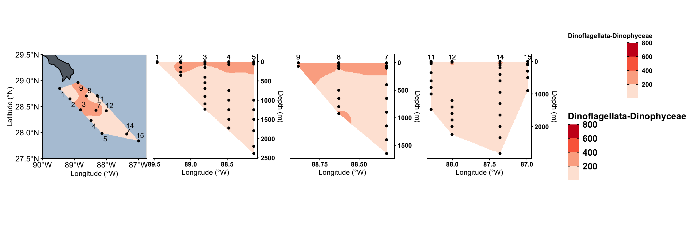
# ggsave("figures/dinophyceae.svg", width = 15, height = 5, device = "svg", limitsize = FALSE)“Dinoflagellata-Syndiniales”
tax_whole_asv_profile("Dinoflagellata-Syndiniales", 50, 800, "Dinoflagellata-Syndiniales")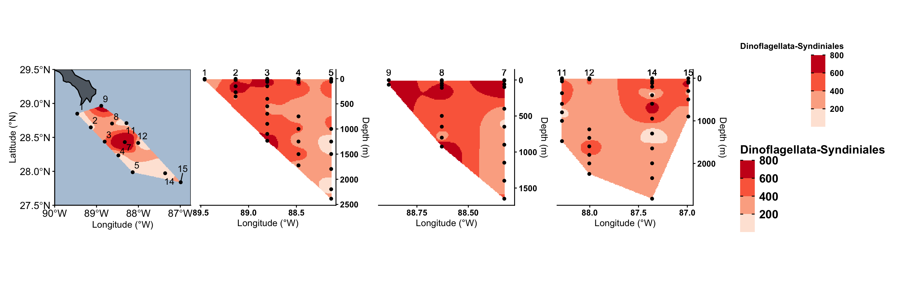
# ggsave("figures/syndiniales.svg", width = 15, height = 5, device = "svg", limitsize = FALSE)3.5 Radiolaria ASV profiles
# unique(bytaxa_surface_asvs$SUPERGROUP_CLASS)
colnames(asv_long_avg_wtax_clean) [1] "FeatureID" "Taxon" "DIVISION"
[4] "SUPERGROUP_CLASS" "Supergroup_simplified" "Supergroup"
[7] "Division" "Subdivision" "Class"
[10] "Order" "Family" "Genus"
[13] "Species" "STN_NISKIN" "MEAN_REPS_seq" asv_long_avg_wtax_clean %>%
left_join((metadata_seqsamples %>% select(STN_NISKIN, Station, Latitude, Longitude, Depth, TRANSECT) %>% distinct())) %>%
filter(grepl("Radiolaria", SUPERGROUP_CLASS)) %>%
ungroup() %>%
group_by(SUPERGROUP_CLASS) %>%
summarise(ASV = n())Joining with `by = join_by(STN_NISKIN)`# A tibble: 6 × 2
SUPERGROUP_CLASS ASV
<chr> <int>
1 Radiolaria-Acantharea 3222
2 Radiolaria-Polycystinea 7255
3 Radiolaria-RAD-A 788
4 Radiolaria-RAD-B 2696
5 Radiolaria-RAD-C 797
6 Radiolaria-Radiolaria_X 156“Radiolaria-Polycystinea”
tax_whole_asv_profile("Radiolaria-Polycystinea", 10, 200, "Radiolaria-Polycystinea")
# ggsave("figures/rad-polycystinea.svg", width = 15, height = 5, device = "svg", limitsize = FALSE)“Radiolaria-Acantharea”
tax_whole_asv_profile("Radiolaria-Acantharea", 10, 100, "Radiolaria-Acantharea")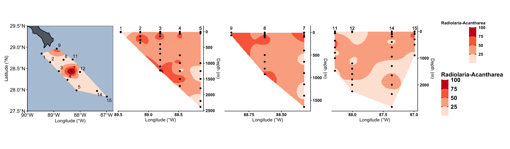
# ggsave("figures/rad-acantharia.svg", width = 15, height = 5, device = "svg", limitsize = FALSE)“Radiolaria-RAD-A” “Radiolaria-RAD-B” “Radiolaria-RAD-C”
tax_whole_asv_profile("Radiolaria-RAD-A", 10, 70, "Radiolaria-RAD-A")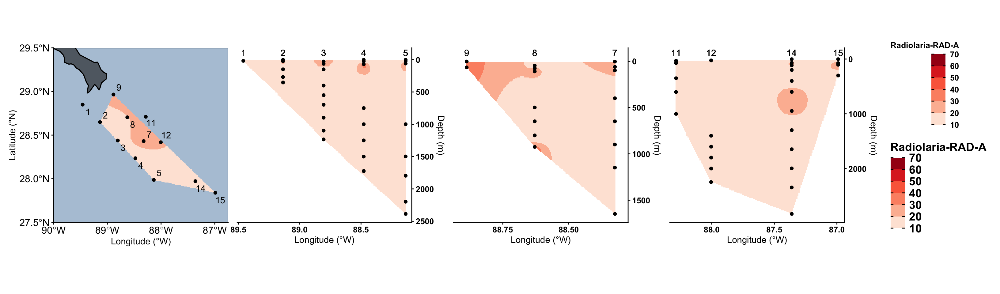
# ggsave("figures/rad-A.svg", width = 15, height = 5, device = "svg", limitsize = FALSE)
tax_whole_asv_profile("Radiolaria-RAD-B", 10, 70, "Radiolaria-RAD-B")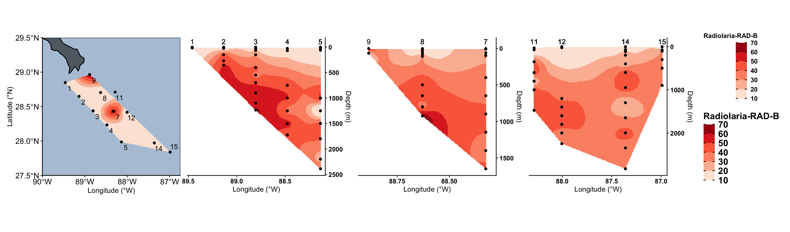
# ggsave("figures/rad-B.svg", width = 15, height = 5, device = "svg", limitsize = FALSE)
tax_whole_asv_profile("Radiolaria-RAD-C", 10, 70, "Radiolaria-RAD-C")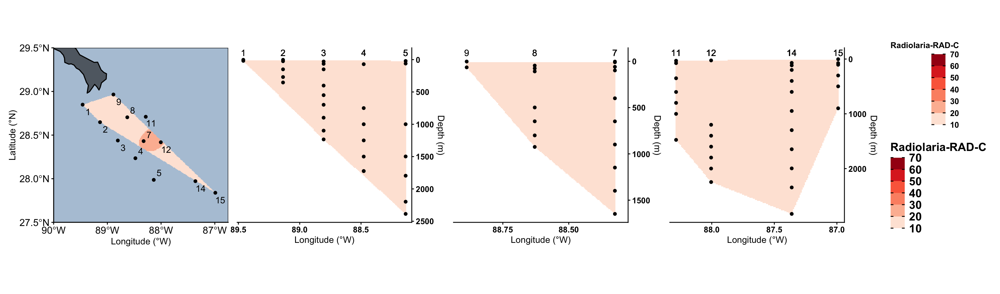
# ggsave("figures/rad-C.svg", width = 15, height = 5, device = "svg", limitsize = FALSE)3.6 Gyrista ASV profiles
# unique(bytaxa_surface_asvs$SUPERGROUP_CLASS)
colnames(asv_long_avg_wtax_clean) [1] "FeatureID" "Taxon" "DIVISION"
[4] "SUPERGROUP_CLASS" "Supergroup_simplified" "Supergroup"
[7] "Division" "Subdivision" "Class"
[10] "Order" "Family" "Genus"
[13] "Species" "STN_NISKIN" "MEAN_REPS_seq" asv_long_avg_wtax_clean %>%
left_join(metadata_seqsamples) %>%
filter(grepl("Gyrista", SUPERGROUP_CLASS)) %>%
ungroup() %>%
group_by(SUPERGROUP_CLASS) %>%
summarise(ASV = n())Joining with `by = join_by(STN_NISKIN)`Warning in left_join(., metadata_seqsamples): Detected an unexpected many-to-many relationship between `x` and `y`.
ℹ Row 1 of `x` matches multiple rows in `y`.
ℹ Row 632 of `y` matches multiple rows in `x`.
ℹ If a many-to-many relationship is expected, set `relationship =
"many-to-many"` to silence this warning.# A tibble: 19 × 2
SUPERGROUP_CLASS ASV
<chr> <int>
1 Gyrista-Bacillariophyceae 5820
2 Gyrista-Bolidophyceae 1377
3 Gyrista-Chrysophyceae 3890
4 Gyrista-Coscinodiscophyceae 1877
5 Gyrista-Dictyochophyceae 2685
6 Gyrista-Eustigmatophyceae 397
7 Gyrista-Gyrista_X 5391
8 Gyrista-Hyphochytriomyceta 189
9 Gyrista-MOCH-2 1303
10 Gyrista-MOCH-3 55
11 Gyrista-MOCH-4 171
12 Gyrista-MOCH-5 864
13 Gyrista-Mediophyceae 13199
14 Gyrista-Pelagophyceae 1332
15 Gyrista-Peronosporomycetes 569
16 Gyrista-Pinguiophyceae 277
17 Gyrista-Pirsoniales 182
18 Gyrista-Raphidophyceae 33
19 Gyrista-Unannotated 1692“Gyrista-Bacillariophyceae”
tax_whole_asv_profile("Gyrista-Bacillariophyceae", 0, 20, "Gyrista-Bacillariophyceae")
ggsave("figures/gyrista-bacil.svg", width = 15, height = 5, device = "svg", limitsize = FALSE)“Gyrista-Chrysophyceae”
tax_whole_asv_profile("Gyrista-Chrysophyceae", 0, 20, "Gyrista-Chrysophyceae")
# ggsave("figures/gyrista-chryso.svg", width = 15, height = 5, device = "svg", limitsize = FALSE)“Gyrista-Dictyochophyceae”
tax_whole_asv_profile("Gyrista-Dictyochophyceae", 0, 20, "Gyrista-Dictyochophyceae")
# ggsave("figures/gyrista-dictyocho.svg", width = 15, height = 5, device = "svg", limitsize = FALSE)“Gyrista-Coscinodiscophyceae”
tax_whole_asv_profile("Gyrista-Coscinodiscophyceae", 0, 20, "Gyrista-Coscinodiscophyceae")
# ggsave("figures/gyrista-coscinod.svg", width = 15, height = 5, device = "svg", limitsize = FALSE)“Gyrista-Mediophyceae”
tax_whole_asv_profile("Gyrista-Mediophyceae", 0, 20, "Gyrista-Mediophyceae")
# ggsave("figures/gyrista-medioph.svg", width = 15, height = 5, device = "svg", limitsize = FALSE)“Ciliophora-CONThreeP”
tax_whole_asv_profile("Ciliophora-CONThreeP", 5, 50, "Ciliophora-CONThreeP")
# ggsave("figures/ciliate-con3p.svg", width = 15, height = 5, device = "svg", limitsize = FALSE)
tax_whole_asv_profile("Ciliophora-Oligohymenophorea", 5, 50, "Ciliophora-Oligohymenophorea")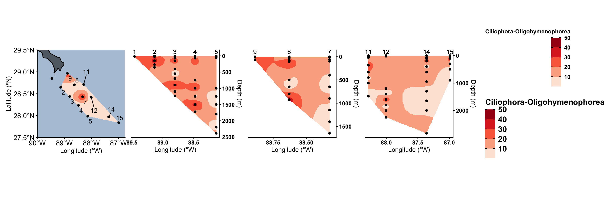
# ggsave("figures/ciliate-oligo.svg", width = 15, height = 5, device = "svg", limitsize = FALSE)
tax_whole_asv_profile("Ciliophora-Phyllopharyngea", 5, 50, "Ciliophora-Phyllopharyngea")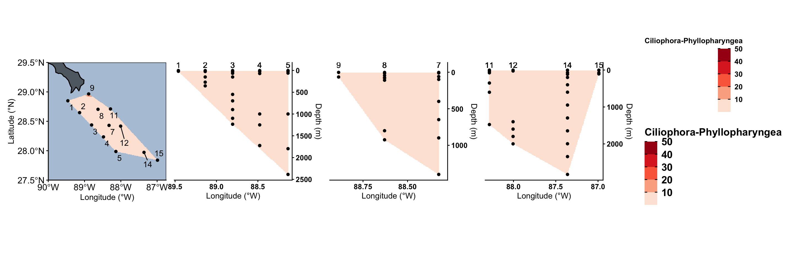
# ggsave("figures/ciliate-phyllo.svg", width = 15, height = 5, device = "svg", limitsize = FALSE)
tax_whole_asv_profile("Ciliophora-Spirotrichea", 5, 50, "Ciliophora-Spirotrichea")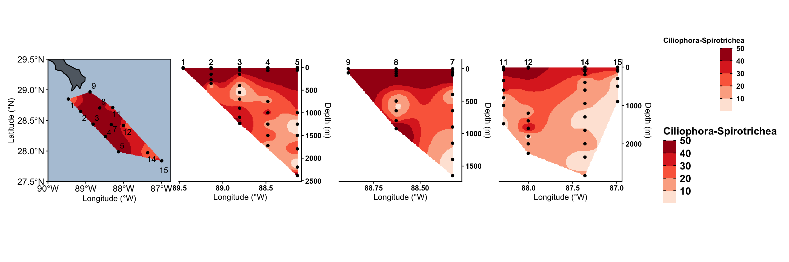
# ggsave("figures/ciliate-spirot.svg", width = 15, height = 5, device = "svg", limitsize = FALSE)4 K-means clustering on map
load("input-data/kmeans-membership-seqs-9.RData", verbose = TRUE)Loading objects:
kmeans_membership_5head(kmeans_membership_5) STN_NISKIN CLUSTER
1 S11_N7 2
2 S14_N10 3
3 S2_N3 2
4 S2_N6 2
5 S3_N7 9
6 S5_N1 2CLUSTER_COLOR <- c("#bd2a2a","#c85e82", "#efc85a", "#df9147","#47c475","#8b94b5","#6e9b4a", "#606aa9", "#524740")
CLUSTER_NUM <- c(1, 2, 3, 4, 5, 6, 7, 8, 9)
names(CLUSTER_NUM) <- CLUSTER_COLOR4.1 Surface kmeans
(metadata_seqsamples %>%
filter(Depth < 6) %>%
select(Station, Latitude, Longitude) %>% distinct())# A tibble: 12 × 3
Station Latitude Longitude
<int> <dbl> <dbl>
1 1 28.8 89.5
2 2 28.6 89.1
3 3 28.4 88.8
4 4 28.2 88.5
5 5 28.0 88.1
6 7 28.4 88.3
7 8 28.7 88.6
8 9 29.0 88.9
9 11 28.7 88.3
10 12 28.4 88.0
11 14 28.0 87.4
12 15 27.8 87.0surface_kmeans <- kmeans_membership_5 %>%
separate(STN_NISKIN, into = c("STN", "NISKIN"), sep = "_", remove = FALSE) %>%
mutate(Station = as.integer(str_remove(STN, "S"))) %>%
select(Station, CLUSTER) %>% distinct() %>%
right_join(metadata_seqsamples) %>% distinct() %>%
filter(Depth < 6) %>%
select(Station, CLUSTER, Latitude, Longitude) %>% distinct() %>%
mutate(CLUSTER_ORDER = factor(CLUSTER, levels = CLUSTER_NUM))Joining with `by = join_by(Station)`Warning in right_join(., metadata_seqsamples): Detected an unexpected many-to-many relationship between `x` and `y`.
ℹ Row 1 of `x` matches multiple rows in `y`.
ℹ Row 590 of `y` matches multiple rows in `x`.
ℹ If a many-to-many relationship is expected, set `relationship =
"many-to-many"` to silence this warning.surface_kmeans Station CLUSTER Latitude Longitude CLUSTER_ORDER
1 11 2 28.710 88.285 2
2 14 3 27.972 87.361 3
3 2 2 28.648 89.136 2
4 3 9 28.438 88.805 9
5 5 2 27.987 88.136 2
6 11 6 28.710 88.285 6
7 14 2 27.972 87.361 2
8 14 6 27.972 87.361 6
9 15 3 27.839 86.990 3
10 3 6 28.438 88.805 6
11 4 6 28.235 88.478 6
12 7 6 28.431 88.325 6
13 8 2 28.704 88.629 2
14 15 7 27.839 86.990 7
15 4 1 28.235 88.478 1
16 7 1 28.431 88.325 1
17 8 9 28.704 88.629 9
18 9 1 28.965 88.887 1
19 11 4 28.710 88.285 4
20 12 8 28.418 88.005 8
21 3 4 28.438 88.805 4
22 8 4 28.704 88.629 4
23 14 8 27.972 87.361 8
24 14 5 27.972 87.361 5
25 15 4 27.839 86.990 4
26 5 9 27.987 88.136 9
27 8 6 28.704 88.629 6
28 9 2 28.965 88.887 2
29 14 1 27.972 87.361 1
30 2 7 28.648 89.136 7
31 5 1 27.987 88.136 1
32 7 4 28.431 88.325 4
33 12 2 28.418 88.005 2
34 12 6 28.418 88.005 6
35 14 9 27.972 87.361 9
36 15 6 27.839 86.990 6
37 2 6 28.648 89.136 6
38 3 1 28.438 88.805 1
39 5 6 27.987 88.136 6
40 7 9 28.431 88.325 9
41 7 8 28.431 88.325 8
42 1 7 28.849 89.460 7
43 4 2 28.235 88.478 2
44 15 5 27.839 86.990 5
45 2 5 28.648 89.136 5
46 3 8 28.438 88.805 8
47 4 7 28.235 88.478 7
48 4 5 28.235 88.478 5
49 5 5 27.987 88.136 5
50 8 8 28.704 88.629 8
51 8 5 28.704 88.629 5
52 11 7 28.710 88.285 7
53 3 2 28.438 88.805 2
54 11 9 28.710 88.285 9
55 11 5 28.710 88.285 5
56 4 9 28.235 88.478 9
57 12 3 28.418 88.005 3
58 11 3 28.710 88.285 3
59 1 2 28.849 89.460 2
60 5 3 27.987 88.136 3ggplot(data = world) +
geom_sf(color = "black", linewidth = 0.6, fill = "grey10", alpha = 0.8) +
# Set lat long region to show
coord_sf(xlim = c(-91, -85), ylim = c(27, 31), expand = FALSE) + # Larger region
# Add data points for stations
geom_point(data = surface_kmeans, aes(x = Longitude, y = Latitude, fill = CLUSTER_ORDER), size = 5, shape = 21, color = "grey20") +
scale_fill_manual(values = CLUSTER_COLOR) +
geom_text(data = surface_labels, aes(label = Station, x = Longitude, y = Latitude), size = 3) +
geom_rect(xmin = -90, xmax = -86.5, ymin = 27.5, ymax = 30, fill = NA, color = "grey10") + #inset
labs(y = "Latitude (°N)", x = "Longitude (°W)") +
scale_x_reverse() +
theme_classic() +
theme(legend.position = "none",
axis.text = element_text(size = 12, colour="black"),
axis.title = element_text(size = 12, colour="black"),
panel.background = element_rect(fill = "#B4C7D9"),
plot.background = element_blank(),
panel.border = element_rect(fill = NA))
# ggsave("figures/kmeans-surface-stations.svg", width = 7, height = 7, device = "svg", limitsize = FALSE)4.2 Depth k-means
depth_kmeans <- kmeans_membership_5 %>%
separate(STN_NISKIN, into = c("STN", "NISKIN"), sep = "_", remove = FALSE) %>%
mutate(Station = as.integer(str_remove(STN, "S"))) %>%
mutate(Niskin = as.integer(str_remove(NISKIN, "N"))) %>%
select(Station, Niskin, CLUSTER) %>% distinct() %>%
left_join((metadata_seqsamples %>% select(Station, Niskin, Depth, Latitude, Longitude, TRANSECT) %>% distinct())) %>%
filter(!is.na(Latitude)) %>%
mutate(CLUSTER_ORDER = factor(CLUSTER, levels = CLUSTER_NUM))Joining with `by = join_by(Station, Niskin)`depth_kmeans Station Niskin CLUSTER Depth Latitude Longitude TRANSECT CLUSTER_ORDER
1 11 7 2 350.578 28.710 88.285 transect3 2
2 14 10 3 114.725 27.972 87.361 transect3 3
3 2 3 2 269.068 28.648 89.136 transect1 2
4 2 6 2 149.888 28.648 89.136 transect1 2
5 3 7 9 150.128 28.438 88.805 transect1 9
6 5 1 2 2386.695 27.987 88.136 transect1 2
7 11 4 6 1000.743 28.710 88.285 transect3 6
8 14 4 2 1646.535 27.972 87.361 transect3 2
9 14 9 6 199.254 27.972 87.361 transect3 6
10 15 8 3 300.312 27.839 86.990 transect3 3
11 3 1 6 1234.265 28.438 88.805 transect1 6
12 3 2 6 1098.284 28.438 88.805 transect1 6
13 3 5 6 549.566 28.438 88.805 transect1 6
14 4 3 6 1499.746 28.235 88.478 transect1 6
15 7 4 6 1148.026 28.431 88.325 transect2 6
16 7 5 6 898.857 28.431 88.325 transect2 6
17 8 5 2 498.597 28.704 88.629 transect2 2
18 15 10 7 74.589 27.839 86.990 transect3 7
19 4 9 1 70.191 28.235 88.478 transect1 1
20 7 10 1 59.472 28.431 88.325 transect2 1
21 8 7 9 109.038 28.704 88.629 transect2 9
22 9 5 1 65.347 28.965 88.887 transect2 1
23 11 11 4 30.573 28.710 88.285 transect3 4
24 12 11 8 25.016 28.418 88.005 transect3 8
25 3 9 4 29.003 28.438 88.805 transect1 4
26 8 8 4 76.433 28.704 88.629 transect2 4
27 8 9 4 45.819 28.704 88.629 transect2 4
28 14 12 8 2.899 27.972 87.361 transect3 8
29 14 7 5 599.496 27.972 87.361 transect3 5
30 15 9 4 104.389 27.839 86.990 transect3 4
31 4 6 6 749.590 28.235 88.478 transect1 6
32 5 3 9 1795.818 27.987 88.136 transect1 9
33 8 1 2 924.761 28.704 88.629 transect2 2
34 8 3 6 800.289 28.704 88.629 transect2 6
35 9 9 2 2.195 28.965 88.887 transect2 2
36 14 11 1 69.850 27.972 87.361 transect3 1
37 2 8 7 24.170 28.648 89.136 transect1 7
38 5 10 1 60.340 27.987 88.136 transect1 1
39 7 12 4 2.746 28.431 88.325 transect2 4
40 11 6 6 601.070 28.710 88.285 transect3 6
41 12 1 2 2245.444 28.418 88.005 transect3 2
42 12 4 2 1599.035 28.418 88.005 transect3 2
43 12 5 6 1399.806 28.418 88.005 transect3 6
44 14 2 6 2344.083 27.972 87.361 transect3 6
45 14 3 9 1996.106 27.972 87.361 transect3 9
46 15 7 6 498.479 27.839 86.990 transect3 6
47 2 1 6 353.454 28.648 89.136 transect1 6
48 3 6 6 401.190 28.438 88.805 transect1 6
49 3 8 1 64.991 28.438 88.805 transect1 1
50 5 4 9 1497.906 27.987 88.136 transect1 9
51 5 6 6 998.988 27.987 88.136 transect1 6
52 7 6 6 648.659 28.431 88.325 transect2 6
53 7 7 9 399.476 28.431 88.325 transect2 9
54 7 9 8 98.397 28.431 88.325 transect2 8
55 8 4 6 648.188 28.704 88.629 transect2 6
56 14 6 5 947.803 27.972 87.361 transect3 5
57 1 5 7 18.603 28.849 89.460 transect1 7
58 3 4 9 698.194 28.438 88.805 transect1 9
59 4 2 2 1723.756 28.235 88.478 transect1 2
60 4 5 2 999.159 28.235 88.478 transect1 2
61 12 3 6 1798.667 28.418 88.005 transect3 6
62 12 12 8 1.783 28.418 88.005 transect3 8
63 15 12 5 2.815 27.839 86.990 transect3 5
64 2 11 5 2.900 28.648 89.136 transect1 5
65 3 12 8 2.579 28.438 88.805 transect1 8
66 4 10 7 25.322 28.235 88.478 transect1 7
67 4 11 5 2.231 28.235 88.478 transect1 5
68 5 11 2 20.618 27.987 88.136 transect1 2
69 5 12 5 2.376 27.987 88.136 transect1 5
70 7 11 8 9.882 28.431 88.325 transect2 8
71 8 10 8 15.176 28.704 88.629 transect2 8
72 8 11 5 2.641 28.704 88.629 transect2 5
73 11 10 7 74.003 28.710 88.285 transect3 7
74 3 3 2 898.349 28.438 88.805 transect1 2
75 11 1 9 1475.675 28.710 88.285 transect3 9
76 11 12 5 1.949 28.710 88.285 transect3 5
77 14 1 9 2826.978 27.972 87.361 transect3 9
78 15 6 6 899.037 27.839 86.990 transect3 6
79 4 4 9 1249.619 28.235 88.478 transect1 9
80 7 2 6 1648.465 28.431 88.325 transect2 6
81 12 2 6 1998.798 28.418 88.005 transect3 6
82 5 2 9 2197.881 27.987 88.136 transect1 9
83 12 6 3 1199.989 28.418 88.005 transect3 3
84 14 5 3 1297.954 27.972 87.361 transect3 3
85 7 3 9 1398.628 28.431 88.325 transect2 9
86 11 5 3 800.195 28.710 88.285 transect3 3
87 4 1 9 1723.698 28.235 88.478 transect1 9
88 14 8 6 399.446 27.972 87.361 transect3 6
89 1 10 2 2.482 28.849 89.460 transect1 2
90 5 5 3 1250.302 27.987 88.136 transect1 3vert_label <- depth_kmeans %>% filter(Depth < 6) %>% select(CLUSTER_ORDER, Station, Longitude, TRANSECT) %>% distinct()
vert_label CLUSTER_ORDER Station Longitude TRANSECT
1 8 14 87.361 transect3
2 2 9 88.887 transect2
3 4 7 88.325 transect2
4 8 12 88.005 transect3
5 5 15 86.990 transect3
6 5 2 89.136 transect1
7 8 3 88.805 transect1
8 5 4 88.478 transect1
9 5 5 88.136 transect1
10 5 8 88.629 transect2
11 5 11 88.285 transect3
12 2 1 89.460 transect1max(depth_kmeans$Depth)[1] 2826.978depth_kmeans %>%
ggplot() +
geom_segment(data = vert_label, linetype = "dashed", aes(x = Longitude, y = 3000, yend = 0, xend = Longitude)) +
# Add data points
geom_jitter(aes(x = Longitude, y = Depth, fill = CLUSTER_ORDER), size = 4, shape = 21, color = "grey20", width = 0.1) +
scale_fill_manual(values = CLUSTER_COLOR) +
geom_text(data = vert_label,
aes(x = Longitude, y = -60, label = Station),
hjust = 0.5, vjust = -0.5, color= "black") +
labs(y = "Depth (m)", x = "Longitude (°W)") +
scale_x_reverse(n.breaks = 4, expand = c(0.1,0.1)) +
scale_y_reverse(position = "right", expand = c(0.1,0)) +
theme_classic() +
facet_grid(cols = vars(TRANSECT), scales = "free", space = "free") +
theme(axis.text = element_text(size = 10, colour="black"),
panel.border = element_blank(),
legend.background = element_blank(),
legend.text = element_text(size = 14, colour="black", face = "bold"),
legend.title = element_blank(),
axis.line = element_line(),
legend.ticks = element_line(color = "black"),
legend.position="left")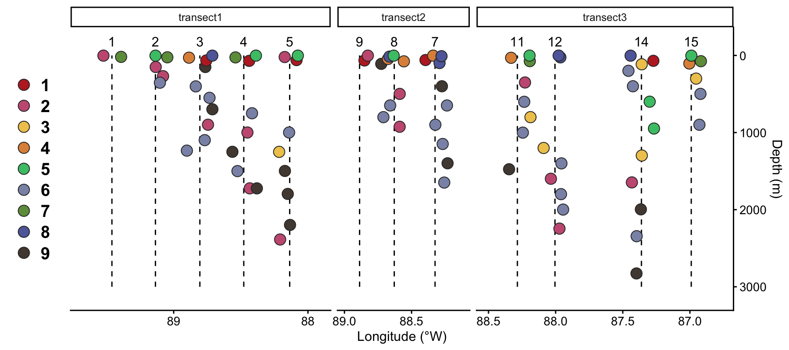
# ggsave("figures/kmeans-stations-bydepth.svg", width = 9, height = 4, device = "svg", limitsize = FALSE)5 Session Information
sessionInfo()R version 4.6.0 (2026-04-24)
Platform: aarch64-apple-darwin23
Running under: macOS Sequoia 15.7.7
Matrix products: default
BLAS: /Library/Frameworks/R.framework/Versions/4.6/Resources/lib/libRblas.0.dylib
LAPACK: /Library/Frameworks/R.framework/Versions/4.6/Resources/lib/libRlapack.dylib; LAPACK version 3.12.1
locale:
[1] en_US.UTF-8/en_US.UTF-8/en_US.UTF-8/C/en_US.UTF-8/en_US.UTF-8
time zone: America/New_York
tzcode source: internal
attached base packages:
[1] stats graphics grDevices utils datasets methods base
other attached packages:
[1] MBA_0.1-3 sf_1.1-1 rnaturalearthdata_1.0.0
[4] rnaturalearth_1.2.0 vegan_2.7-5 permute_0.9-10
[7] viridis_0.6.5 viridisLite_0.4.3 plotly_4.12.0
[10] gt_1.3.0 ggupset_0.4.1 patchwork_1.3.2
[13] compositions_2.0-9 decontam_1.32.0 phyloseq_1.56.0
[16] lubridate_1.9.5 forcats_1.0.1 stringr_1.6.0
[19] dplyr_1.2.1 purrr_1.2.2 readr_2.2.0
[22] tidyr_1.3.2 tibble_3.3.1 ggplot2_4.0.3
[25] tidyverse_2.0.0
loaded via a namespace (and not attached):
[1] DBI_1.3.0 gridExtra_2.3 rlang_1.2.0
[4] magrittr_2.0.5 ade4_1.7-24 otel_0.2.0
[7] e1071_1.7-17 compiler_4.6.0 mgcv_1.9-4
[10] systemfonts_1.3.2 vctrs_0.7.3 reshape2_1.4.5
[13] pkgconfig_2.0.3 crayon_1.5.3 fastmap_1.2.0
[16] XVector_0.52.0 labeling_0.4.3 utf8_1.2.6
[19] rmarkdown_2.31 tzdb_0.5.0 ragg_1.5.2
[22] xfun_0.58 jsonlite_2.0.0 biomformat_1.40.0
[25] parallel_4.6.0 cluster_2.1.8.2 R6_2.6.1
[28] stringi_1.8.7 RColorBrewer_1.1-3 Rcpp_1.1.1-1.1
[31] Seqinfo_1.2.0 iterators_1.0.14 knitr_1.51
[34] IRanges_2.46.0 Matrix_1.7-5 splines_4.6.0
[37] igraph_2.3.2 timechange_0.4.0 tidyselect_1.2.1
[40] rstudioapi_0.19.0 yaml_2.3.12 codetools_0.2-20
[43] lattice_0.22-9 plyr_1.8.9 Biobase_2.72.0
[46] withr_3.0.2 S7_0.2.2 evaluate_1.0.5
[49] survival_3.8-6 isoband_0.3.0 units_1.0-1
[52] bayesm_3.1-7 proxy_0.4-29 xml2_1.5.2
[55] Biostrings_2.80.1 pillar_1.11.1 tensorA_0.36.2.1
[58] KernSmooth_2.23-26 foreach_1.5.2 stats4_4.6.0
[61] generics_0.1.4 S4Vectors_0.50.1 hms_1.1.4
[64] scales_1.4.0 class_7.3-23 glue_1.8.1
[67] lazyeval_0.2.3 tools_4.6.0 robustbase_0.99-7
[70] data.table_1.18.4 fs_2.1.0 grid_4.6.0
[73] ape_5.8-1 nlme_3.1-169 cli_3.6.6
[76] textshaping_1.0.5 svglite_2.2.2 gtable_0.3.6
[79] DEoptimR_1.2-0 digest_0.6.39 BiocGenerics_0.58.1
[82] classInt_0.4-11 ggrepel_0.9.8 htmlwidgets_1.6.4
[85] farver_2.1.2 htmltools_0.5.9 multtest_2.68.0
[88] lifecycle_1.0.5 httr_1.4.8 MASS_7.3-65